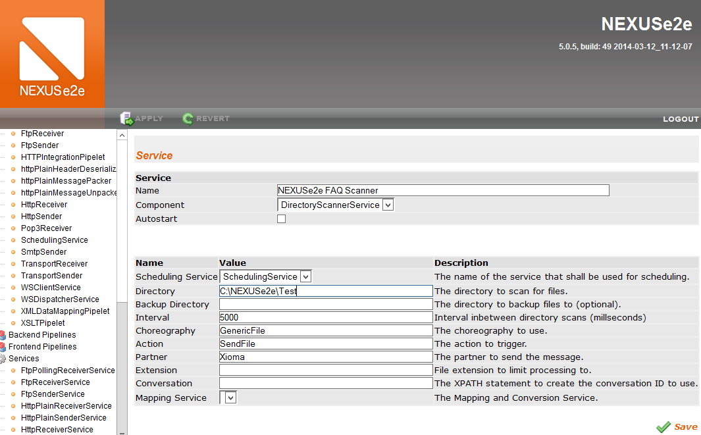

NEXUSe2e Backend Integration
Definition
NEXUSe2e integration is based on a Service and Pipeline system which contains Pipelets. Services and Pipelets are a simple implementation of a predefined interface and contain only a few lines of code. Some use the standard implementation or tweak the existing samples to achieve their custom implementation. If you have an integration in mind that is not out of the box, it is always a good idea to describe your plans to us, maybe there is a solution allready in place.
Default Integration
The integration is mostly very specific for the different customers and it is difficult to sum this up into a general Text. There are basically four easy options to go with, which can be altered to specific needs:
Simple File Transfer
Files are dropped in specified directories which are scanned regularly. NEXUSe2e sends the file to a specified combination of Partner, choreography and action.
For every combination a dedicated directory scanner service is needed.
An example of a configured directory scanner service could look like this:
- 
- Zoom
{kind=link}
There is also a possibility for a multi directory scanner which is configured via an external XML file. So there is no need for one specific service for every combination.
Simple file transfer is not very efficient and has some side effects like file locks, incomplete files, problems with burst traffic and very few monitoring options due to the dependency of the external file system.
Plain HTTP
The message will be carried by the post body and the URL parameters are used as routing information.
The result you will receive is a 200 if the routing information is logically correct, the connection is closed as soon as the message is received. This will give you instant feedback which makes monitoring more accurate. For a tutorial, how to enable Plain HTTP and create a choreography with it, look here.
Web Service Call
You can also communicate directly with your backend, this is fully integrated in the default configuration since NEXUSe2e 5.3.0 and can be activated manually pre 5.3.0. Find the corresponding tutorial for pre 5.3.0 here and post 5.3.0 here.
Database Integration
The last not very common option is using a database integration. There is a service and corresponding pipelet which provide a basic integration for inbound and outbound messages, based on the content of the specified table. From high level, it’s the same as file transfer but not storee in the file system but a database table. This Table is not part of NEXUSe2e and must be create manually and requires a predefined layout which is not configurable.
Another downside of this intermediate database table is the burst load you will generate on your partners systems. Every time the database is being polled it will generate burst of messages. The polling time is configurable for sure, but you have also keep an eye on your export services which should be somewhat synchronized with the NEXUSe2e service. Otherwise you can run into some interesting locking situations.